Lays your logos out on a print-ready sheet for the heatpress, with the registration marks and jig outlines in place.
New on Nov 8: sewing buffer and Trim edges. See what’s new →It runs in your browser. Your logo files stay on your computer, and the tool still works if the internet drops.
Each card links to the steps and says where the control is: in the panel on the left, or in the logo editor, which opens from the ✎ button on a logo’s row.
Newest first. A change reaches you the next time the page reloads.
It’s printed small in the sheet margin and used in the file name. The download buttons stay grey until you enter one.
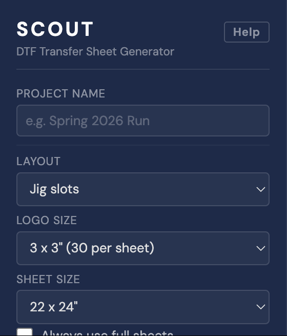
There are four. If you aren’t sure, leave it on 3 × 3.
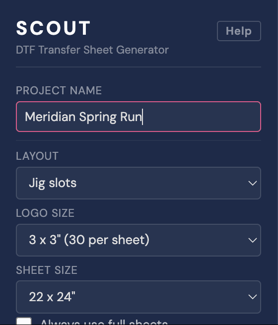
Drop the file on the dashed box, or click the box to choose it. Use a PNG with a transparent background if you have one. A JPEG works, but it can’t be transparent, so its background prints as a white box.
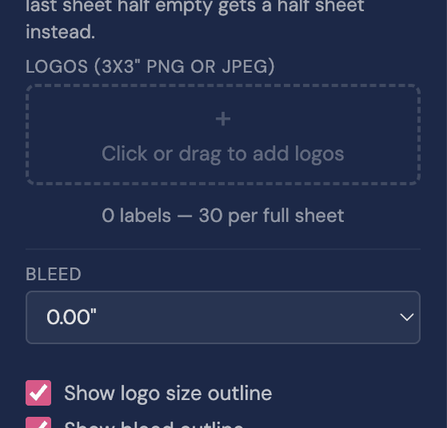
Use − and +, or click the number and type it. The counter underneath shows how many sheets that makes, for example 45 labels — 1 full sheet + 1 half sheet.
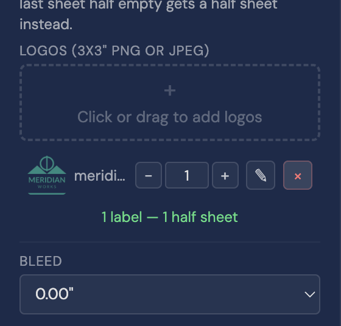
When the printer panel is green, click the download button. For one sheet it says Download PNG. For more than one it says Save PNGs to Folder and asks where to put them. Send those files.
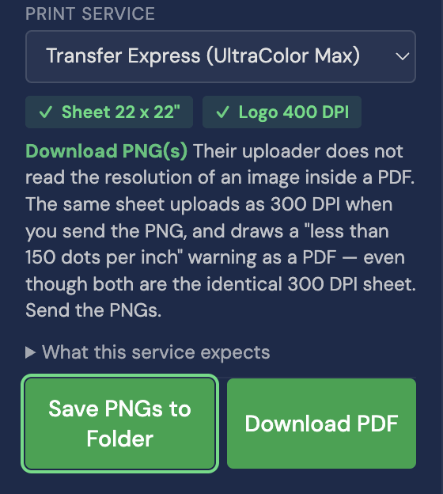
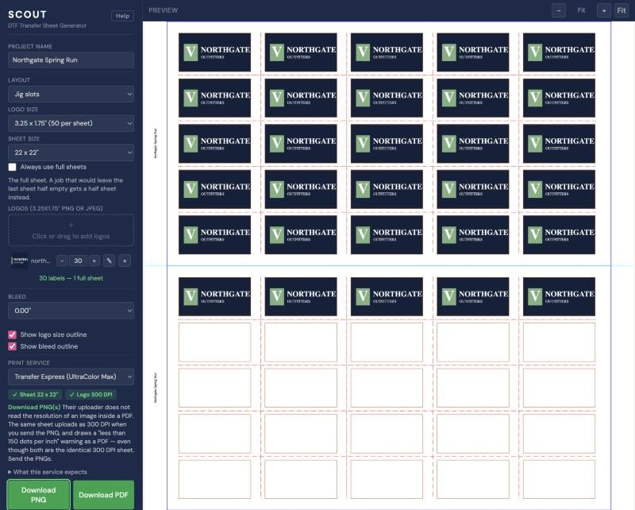
1 2 3 4 5When a label is sewn on, the stitching runs through a band just inside its edge. A sewing buffer keeps the artwork out of that band.
Click ✎ on the logo’s row.
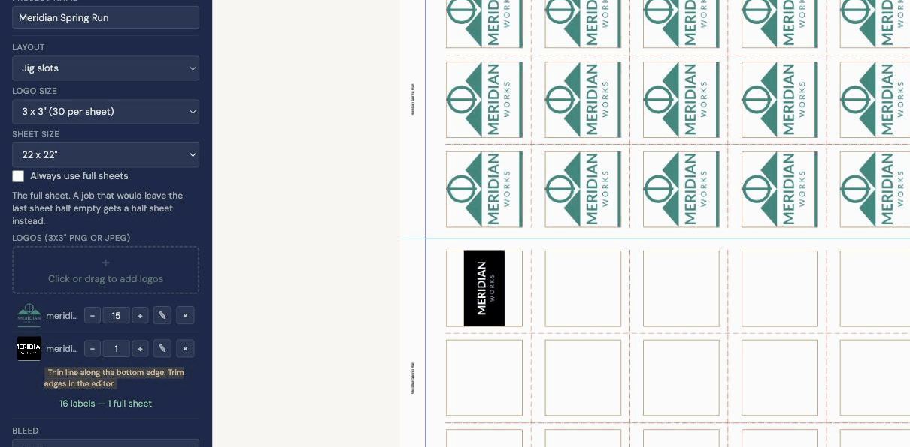
Under Sewing buffer, pick 3 mm, 4 mm or ¼″. A magenta line appears that far in from the edge, and the logo shrinks to fit inside it.
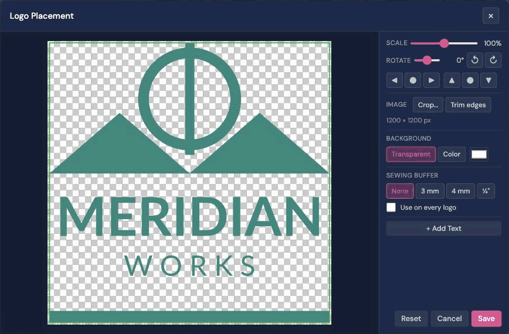
If the job has more than one logo, tick Use on every logo to give them all the same buffer.
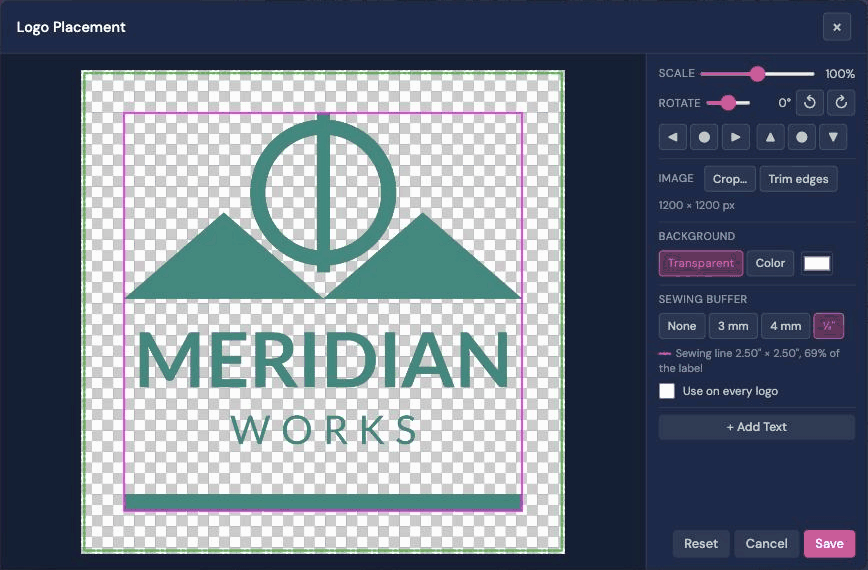
Click Save. Each label in the sheet preview now shows its magenta line.
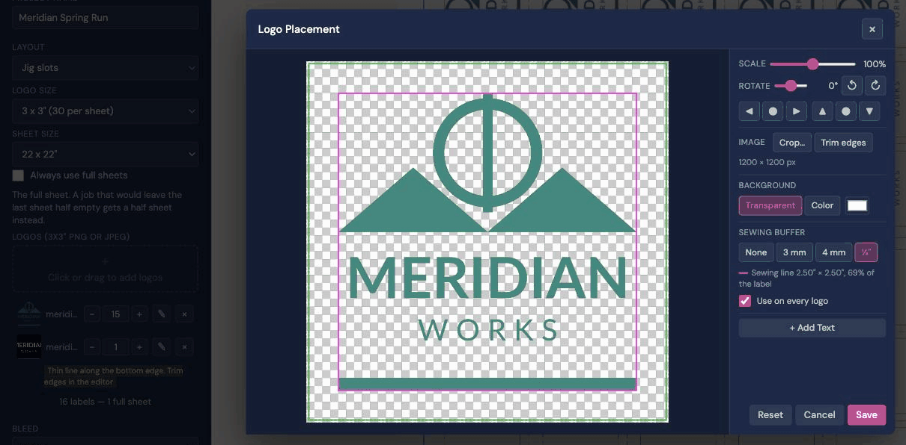
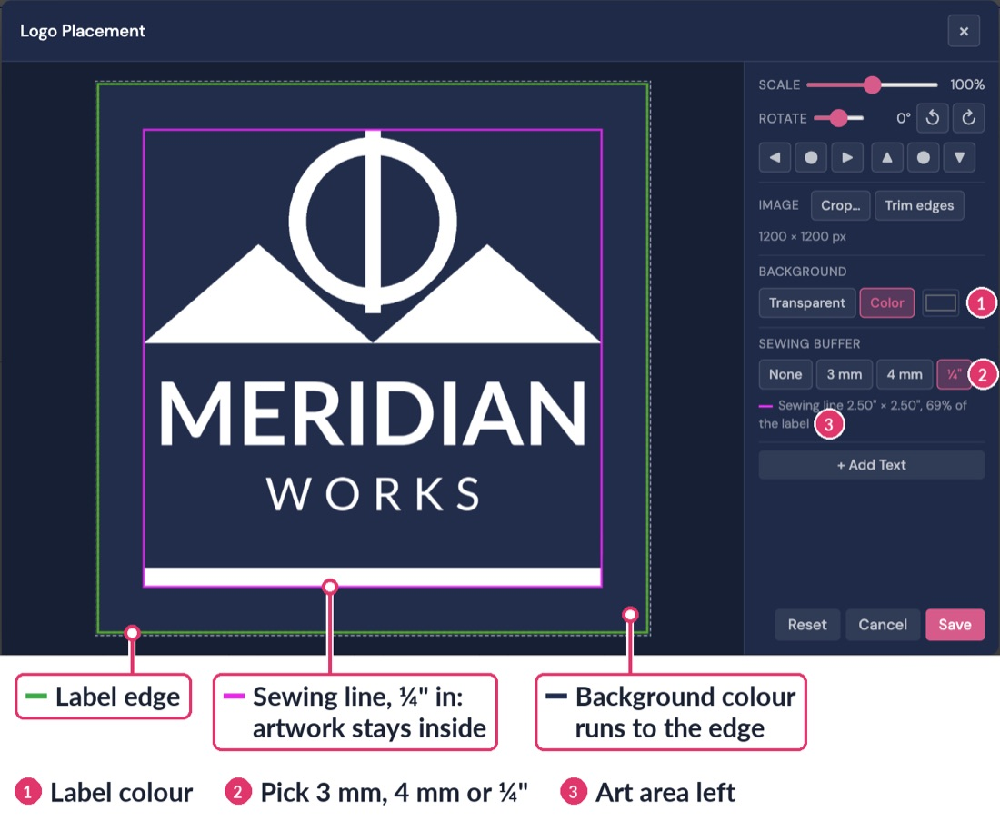
The tool can’t recolour a logo. For a white logo on a navy label, get a white version of the logo from the customer and set the background to navy. If a sewing buffer is set, the colour still runs to the label edge and only the artwork moves in.
Logo exports sometimes have a 1-pixel line along one edge. It’s too thin to notice on screen, but it prints on every label. When the tool finds one, it puts a yellow note under the logo, such as Thin line along the bottom edge.
Click ✎ on the row with the yellow note.
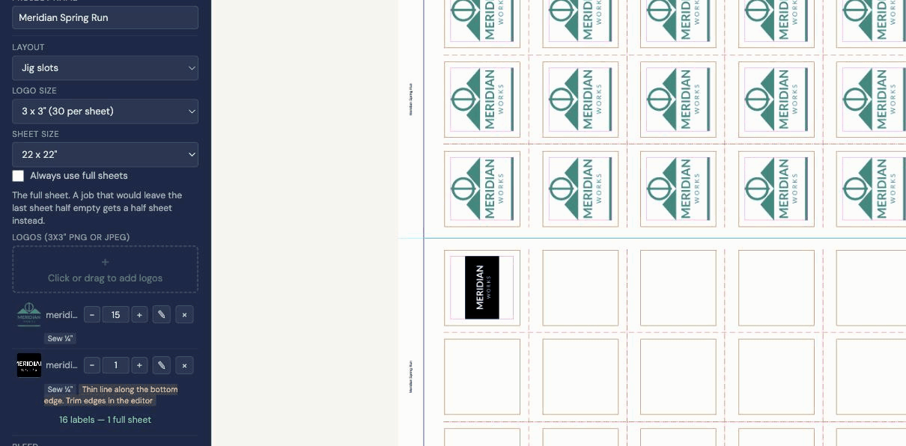
The tool finds the line or the empty margin and puts a box around the part to keep. To place the box yourself, click Crop… and drag it.
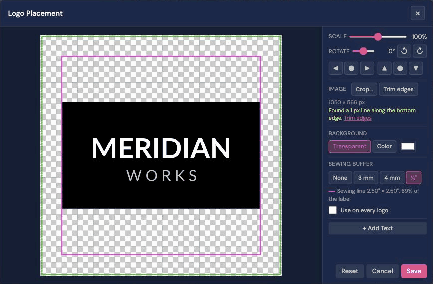
It gives the printed size and the DPI. Amber means under 270 DPI, and red means under 200.
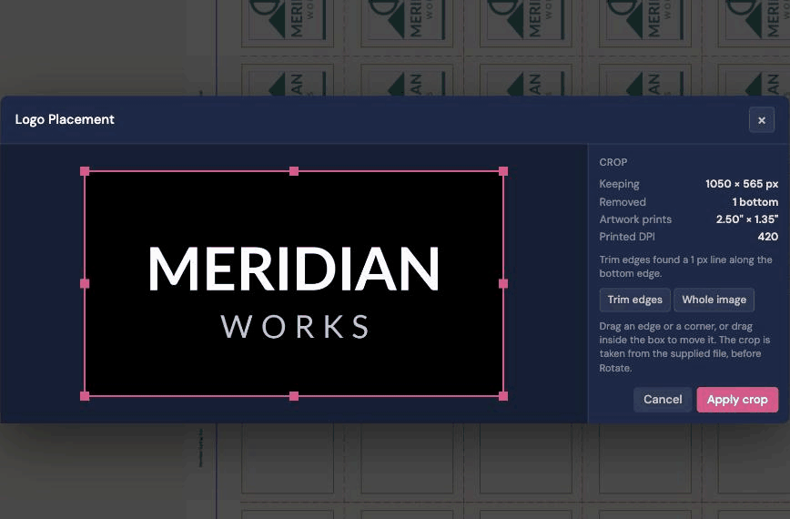
Click Apply crop, then Save. The yellow note goes away.
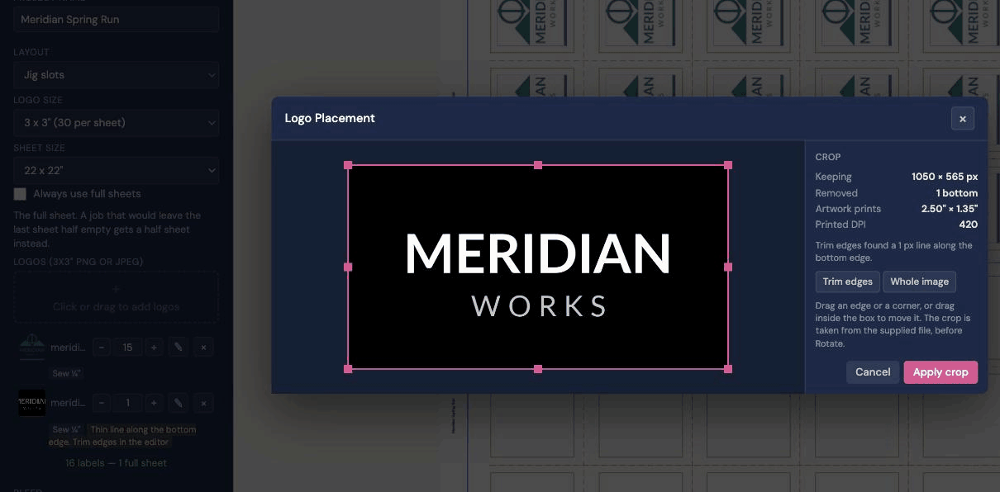
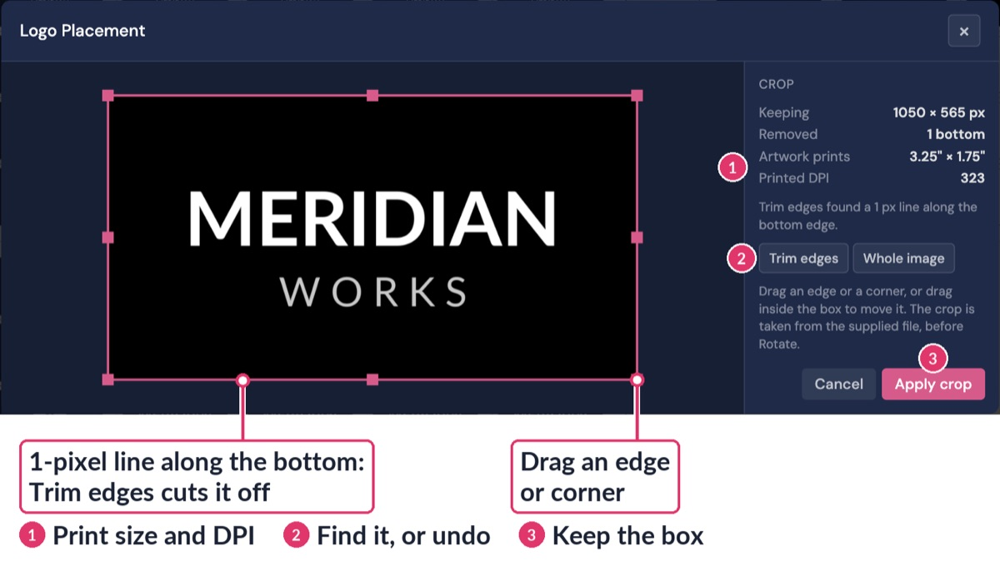
Your file isn’t changed, so Undo crop always brings the whole image back. Trimming empty space makes the logo print larger, which lowers its DPI. The readout shows the new figure.
You only choose the full sheet size. If the last sheet of a job would be half full or less, the tool prints it as a half sheet.
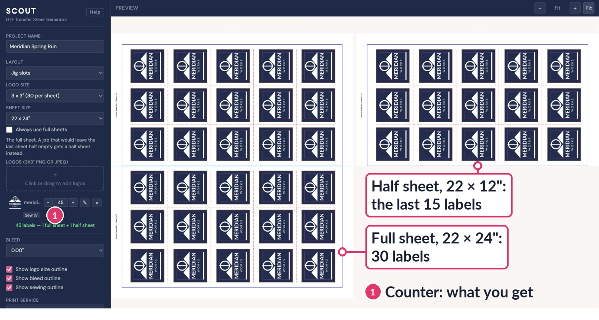
| Labels at 3 × 3″, jig slots | What you get | Film |
|---|---|---|
| 15 | 1 half sheet | 12″ |
| 16 | 1 full sheet | 24″ |
| 30 | 1 full sheet | 24″ |
| 45 | 1 full + 1 half | 36″ |
| 46 | 2 full sheets | 48″ |
Labels fill one jig half at a time, and two halves make a full sheet. If one half is left over, it becomes a half sheet: the top half of the film, 12″ tall. It is always the last sheet of the job. In the jig layout you press it in the jig like a full sheet. In the packed layout it is packed separately.
Two half sheets use the same film as one full sheet and take twice the pressing, so 16 labels go on one full sheet. At 45, a second full sheet would be half empty, so the last 15 go on a half sheet.
If you cut the transfers out by hand instead of pressing them through the jig, the packed layout uses the whole sheet inside a ½″ border and fits more labels.
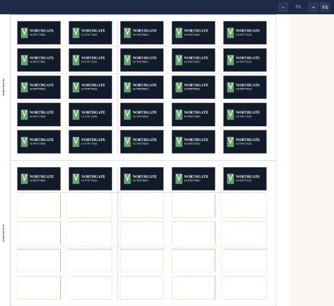
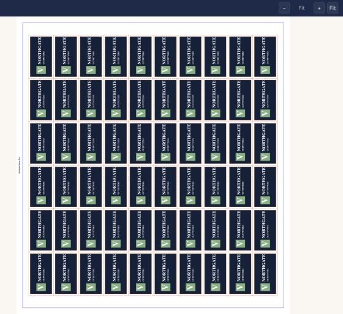
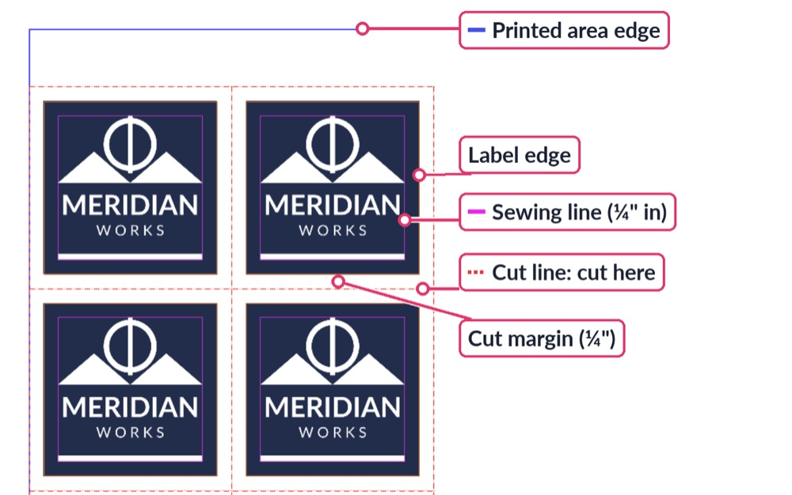
| Logo size | Jig slots | Packed | Packed, ¼″ margin |
|---|---|---|---|
| 3 × 3″ | 30 | 42 | 36 |
| 3.25 × 1.75″ | 50 | 60 | 54 |
| 2.5 × 1.3″ | 84 | 104 | 84 |
| 2 × 2″ | 64 | 90 | 72 |
Packed works for these sizes now, since it doesn’t use a jig. Jig slots won’t line up until a jig is cut to match, so use packed for them.
Changes in the editor apply to that logo and every copy of it.
{{name}} in the preview is a placeholder
and isn’t printed.If the Variable Data box is empty, the labels print with only the logo, and the sheet gives no warning. Make sure the counter is green before you download.
Both chips are green, so you can download.
The download button is greyed out. A red box explains the problem and has a button to fix it.
Transfer Express accept uploads up to 22 × 22″. If you send a 22 × 24″ sheet, they shrink it to fit instead of rejecting it.
A 3″ label comes out at 2.75″ and no longer lines up with the jig. Their site shows the new size, but it doesn’t say the file was changed. This has already happened on one job.
It greys out the download and shows a Switch to 22 × 22″ button that changes the setting.
Transfer Express do sell a 24 × 22″ gang sheet, but only for sheets built in their own online designer. An uploaded file counts as a single image, and the largest single image they take is 22 × 22″.
The PNG uploads as 300 DPI. The PDF of the same sheet is also 300 DPI, but their uploader can’t read its resolution and warns that it is under 150 dots per inch.
The app outlines the button to use in green. The PDF is easier to look over on screen before you print, but don’t upload it to Transfer Express.
| Job | Button | What you get |
|---|---|---|
| One sheet | Download PNG | Northgate Spring Run_sheet1.png |
| Several sheets | Save PNGs to Folder | You pick a folder, and each sheet is saved in it as its own PNG |
| Several sheets, older browser | Download PNGs (ZIP) | Northgate Spring Run_sheets.zip |
Every file is 300 DPI with a transparent background, which DTF film needs. Transfer Express take one file per upload slot, so upload each PNG of a multi-sheet job separately.
| What you see | What to do |
|---|---|
| Download buttons greyed out | There’s probably no project name. Type one at the top left. |
| × Sheet 22 x 24″ | Click Switch to 22 × 22″ in the red box. |
| Orange 200 DPI — slightly soft under a logo | Ask for the logo at the pixel size shown, or lower the scale. |
| Need 6 values, have 0 in red | Add one value per label in Variable Data and click Apply. Steps → |
| A white block behind the logo | The file is a JPEG, which can’t be transparent. Ask for a PNG. |
| Text on the labels is invisible | The text is the same colour as what’s behind it. Choose a different colour. |
| Logo cut off at the edges | Scale is over 100%. Open the editor and click Reset. |
| Yellow Crosses the sewing line by 0.16″ under a logo | The logo is scaled up too far or dragged off centre. Lower the scale or centre it again. Anything past the line is cut off. |
| A thin light or dark line along one edge of every logo, or a yellow Thin line along the bottom edge | Open the editor, click Trim edges, then Apply crop. Steps → |
| With a sewing buffer, the logo’s own coloured square shrinks too | The square is part of the logo file. Set Background to the same colour so the label is solid to the edge. Steps → |
| Logo doesn’t reach the green outline on every side | The logo file is a different shape from the label, and the tool won’t stretch it. Ask for a file in the label’s proportions (sizes below). |
| Red note: the bleed reaches past a cut margin | The print would overlap the next label. Make Cut margin larger than the bleed, or reduce the bleed. |
| Your printer won’t take a half sheet | Tick Always use full sheets under Sheet Size. |
| Anything else odd | Close the window and open it again. The job isn’t saved between sessions. Only your printer choice and the full-sheet setting are kept. |
| Label size | Ask for |
|---|---|
| 3 × 3″ | 900 × 900 pixels |
| 3.25 × 1.75″ | 975 × 525 pixels |
| 2.5 × 1.3″ | 750 × 390 pixels |
| 2 × 2″ | 600 × 600 pixels |
Larger files are fine, since the tool scales them down cleanly. Smaller files print with soft edges, and below 150 DPI Transfer Express’s printer adds a jagged white line around the artwork.
A dark bar appears at the bottom of the window saying A new version is ready. You don’t need to download or install anything. See what changed →
The version you have open keeps working until then. Reloading clears your logos and settings, so finish and download the job you’re on first.
There’s no limit on how many labels a job can have, and the tool adds sheets as it needs them. You do need a project name before anything will download.